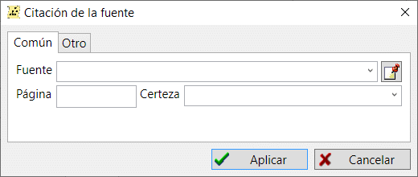

Una referencia a fuentes es un enlace especializado válido sólo para registros de persona, familia y evento, que se vincula a una fuente de información concreta. Un enlace a una fuente tiene dos propiedades adicionales: número de página o de hoja donde se hizo la mención, y nivel de autenticidad de la información. Disponer del número de página o de folio es útil cuando se necesita volver a revisar la fuente. El nivel de autenticidad le indica rápidamente hasta qué punto puede confiar en una fuente de información. Cuando un documento fuente tiene manchas o daños, y no has podido leer el texto con seguridad, puedes asignar el nivel de "fiabilidad dudosa de la prueba" a dicha fuente. Esto puede evitar que llegues a conclusiones erróneas.
El nivel de autenticidad también afecta al índice de autenticidad, que se calcula para una persona en un módulo estadístico para analizar valores medios aritméticos. Los diagramas de árbol utilizan el nivel de autenticidad para que la información mostrada sea más obvia.

Ver también: Fuente, Persona, Familia, Evento/Hecho.